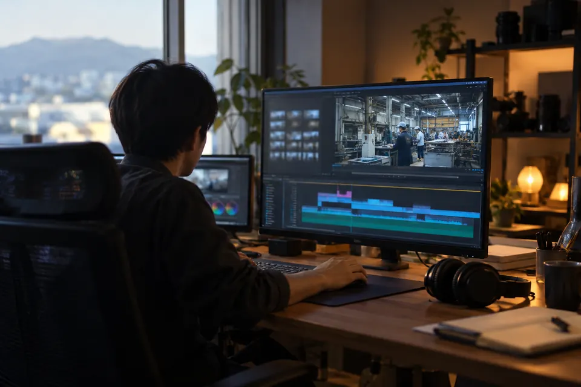

会社の動画をAIで安く早く作る｜福井の中小企業向け、2026年に使える道具と頼み方

結論会社の動画をAIで作ると安く早くなるのは、道具の値段が安いからではありません。これまで人が時間をかけていた撮影の段取り、ナレーションの収録、直しのやり直しの3つの工程が、まるごと減るか、短くなるからです。映像は文章と静止画から作れ、声は文字を打てば出て、直しは台本を書き換えて作り直すだけで済みます。残るのは、何を伝える動画にするかを決める仕事と、できたものを人の目で確かめる仕事です。
この記事の要点
- 安くなる理由は、撮影・収録・直しの3つの工程が減ること。道具の値段ではない
- 2026年10月時点の道具は、映像生成（Veo、Runway）、静止画（GPT Image）、声（ElevenLabs、Gemini TTS）、音楽（Suno）、編集（CapCut、Premiere Pro）。多くに無料の範囲と有料プランがある
- 自分たちで作った研修のPV 6本（約1分）は、映像の生成にかかった費用が576円だった
- 社外に出す前に、既存の作品と似ていないかを確かめ、使った指示（プロンプト）を残す。人の顔と声は、本人の了解を取ってから使う
どの工程が減り、どの工程が残るか
動画制作の費用は、ほとんどが人の時間です。AIで作ると、次のように変わります。
| 工程 | これまで | AIを使うと | 残る人の仕事 |
|---|---|---|---|
| 企画・台本 | 制作会社と打ち合わせを重ねる | 伝えたいことを箇条書きで渡し、AIが台本の下書きを作る | 何を伝えるかを決める。数字と固有名詞を確かめる |
| 撮影 | 場所と出演者と機材を押さえ、日程を合わせて撮る | 文章と静止画から映像を生成する。手元の写真を動かす | 実物を見せたい場面は撮る。生成した映像が実物と違わないかを見る |
| ナレーション | スタジオで収録し、言い直しのたびに録り直す | 文字を打てば声が出る。台本を直せば録り直しが要らない | 読み方と間を聞いて直す |
| 字幕・テロップ | 1本ずつ手で入れる | 音声から自動で起こし、字幕にする | 誤変換と固有名詞を直す |
| 直し | 撮り直しや再編集で、日数と追加の費用がかかる | 台本と素材を差し替えて作り直す | 直した結果を通しで確かめる |
減り方が大きいのは、撮影と直しです。 撮影は、場所・人・機材を同じ日に集める段取りそのものが要らなくなります。直しは、これまで「撮り直すほどではないから我慢する」と諦めていた箇所を、作り直して試せるようになります。AIおまかせ制作のページで「最初の形がすぐに出るので、見ながら何度でも直せる」と書いているのは、この工程の変化のことです。
一方で、商品や工場の実物を見せたい動画では、撮影が残ります。生成した映像は本物らしく見えますが、自社の製品そのものではありません。実物の写真や短い撮影素材と、生成した映像を組み合わせるのが現実的です。
2026年10月時点で使える道具（公式ページで確かめたもの）
道具は役割ごとに分かれています。次の表は、2026年10月11日に各社の公式ページで提供状況を確かめたものです。料金は変わるので書いていません。「有料プランがある」とだけ覚えておいてください。
| 役割 | 道具 | 公式ページで確かめたこと | プランの注意 |
|---|---|---|---|
| 映像を生成する | Veo 3.1（Google） | 文章や画像から、音声つきの8秒の映像を作る。前に作った映像を7秒ずつ、最大20回まで延ばせる | Gemini の有料プラン（Google AI Plus・Pro・Ultra）で動画生成が使える（Pro は Veo 3.1 Lite の限定トライアル、Ultra は Veo 3.1）。Gemini API からも使う |
| 映像を生成する | Runway | 自社のモデル Gen-4.5 のほか、Seedance や Kling など他社のモデルも画面から選べる | 無料プランは1回限りのクレジット。透かしなしは有料プランから |
| 静止画を作る | GPT Image（OpenAI） | 文章から画像を作る。既存の画像を指示で編集する。API から使える | 料金は公式ページで確かめる |
| 声を作る | ElevenLabs | 文字を読み上げる。Multilingual v2 は日本語を含む29言語に対応 | 商用ライセンスは Starter 以上の有料プランから。無料プランには付かない |
| 声を作る | Gemini TTS（Google） | 日本語に対応。1回の生成で2人までの掛け合いが作れる | Gemini API から使う |
| 音楽を作る | Suno | 文章から曲を作る | 無料プランで作った曲は個人の非商用利用に限る。商用利用は有料プランで、許可されたダウンロードをしたものだけ |
| 編集する | CapCut | 動画の編集。基本の編集ツールは無料版に含まれる | 基本の編集は無料で始められ、有料プラン（Pro ほか）がある |
| 編集する | Premiere Pro（Adobe） | 読み込み時に自動で文字起こしし、文章を切り貼りするように編集できる。映像の端を生成で延ばす | 月額か年額の契約だけ。生成機能はクレジット制 |
AIで1本の動画ができるまで（役割ごとの道具の組み合わせ）
道具は数か月で入れ替わります。1つの会社のサービスに頼らず、「映像」「静止画」「声」「音楽」「編集」という役割で分けて考えると、道具が変わっても同じ段取りで作れます。
自分たちで試した例：研修のPV 6本、映像の生成費は576円（人の手間は別）
弊社の研修で、各章の冒頭に流す約1分の映像を6本作りました。章ごとに絵コンテを書き、要の場面を静止画で作り、映像生成で動かし、文字と音を重ねて1本ずつ組み立てる、という手順です。映像の生成にかかった費用は、6本で576円でした。
この数字には、人が絵コンテを書き、できたものを見て直した時間は入っていません。安くなったのは「撮影に出かけない」「出演者を頼まない」「直しを作り直しで済ませる」の3つの工程が無くなった分で、道具の費用が安いことは、そのうちの一部です。手順と使った道具は「研修のPV 6本を、生成費576円で」に載せています。
福井の会社で、動画から始めやすい場面
撮影の段取りが重くて見送られやすかった用途に、次の3つがあります。福井の会社で始めやすいのも、この3つです。
- 県外からの採用。工場や事務所の様子を、説明会やホームページで見せたい。写真を元に短い映像を作り、ナレーションを付ける
- 取引先への工場・工程の紹介。遠方の取引先に、訪問してもらう代わりに見せる。実物は撮影した素材を使い、説明の部分を生成で補う
- 社内の手順の説明。新しく入った人に同じ説明を何度もしている作業を、1本の動画にする。台本を直せば作り直せるので、手順が変わっても追いつける
採用や工場の紹介では、実物を見せる部分に撮影が残ります。スマートフォンで撮った短い素材で足りることが多く、専門の撮影を頼む必要は必ずしもありません。
頼むときに伝えると早い5つのこと
制作を頼むときも、自社で作るときも、次の5つが決まっていると、進め方がすぐに決まります。
| 伝えること | 例 |
|---|---|
| 本数と長さ | 1本、約1分。または、短い動画を5本 |
| 使う場所 | ホームページ、SNS、展示会のモニター、社内の研修 |
| 手元にある素材 | 商品や工場の写真、会社案内、ロゴ、過去の動画 |
| ナレーションの有無と声の種類 | 男性か女性か、落ち着いた声か明るい声か。社員の声を使うかどうか |
| いつまでに必要か | 展示会や説明会の日程。初めての動画なら、見て直す時間を1〜2週間は取る |
AIおまかせ制作では、作業の量と納期を伺ったうえで、都度お見積もりしています。専門の会社から取った見積もりが手元にあれば、同じ条件で比べられるように、一緒に見せてください。
気をつけること：著作権・肖像・声
AIで作った動画でも、社外に出すときの確認は人の仕事です。著作権については、文化庁の「AIと著作権に関するチェックリスト＆ガイダンス」（2024年7月）が、出す前に既存の著作物と似ていないかを確かめることと、使った指示（プロンプト）を残すことを挙げています。確かめ方と社内のルールのひな形は「生成AIの社内ルールの作り方」にまとめたので、ここでは動画に固有の点だけを書きます。
動画では、1本の中に映像・声・音楽と、別々の道具で作ったものが入ります。道具ごとに商用利用の条件が違うので、使った道具を1本ごとに控えておいてください。上の表のとおり、無料プランで作ったものは商用利用できない道具（Suno、ElevenLabs）があります。会社の動画に使うなら、該当する有料プランで作ったものを使います。
人の顔と声は、著作権とは別に扱います。文化庁の「AIと著作権に関する考え方について」（2024年3月）は、作風や声は著作権法上の権利の対象とならない部分だとしたうえで、俳優・声優などの声を含んだ実演の利用とAIの関係は、今後も検討を続ける課題としています。つまり、著作権の資料だけでは、声の扱いは決まりません。社員や取引先の顔・声を動画に使うときは、使う目的と場所を伝えて、本人の了解を取ってから使ってください。道具の側にも決まりがあります。たとえば ElevenLabs の精度の高い声のクローンは、本人の声であることを確かめる手続きがあり、他人の声は本人の同意があってもクローンできないとしています。
撮影がまったく要らなくなるわけではない
AIで安く早くなるのは、工程が減るからです。実物を見せる場面、社員本人が話す場面は、撮影が残ります。そこを無理に生成で置き換えると、本物と違う映像を会社の名前で出すことになります。実物は撮り、説明や導入の部分を生成で作る、という組み合わせが、いまの道具では無理がありません。
福井の会社のAI活用の全体像は「福井の中小企業のAI活用ガイド2026」にまとめています。AI よろづやの「AIおまかせ制作」は、会社や商品の紹介動画、社員教育の動画、SNS用の短い動画を、台本から映像、仕上げまで引き受けるサービスです。
まとめ
- AIで動画が安く早くなるのは、撮影の段取り・ナレーションの収録・直しのやり直し、の3つの工程が減るから
- 2026年10月時点の道具は、映像（Veo、Runway）、静止画（GPT Image）、声（ElevenLabs、Gemini TTS）、音楽（Suno）、編集（CapCut、Premiere Pro）。役割で分けて考えると、道具が変わっても同じ段取りで作れる
- 弊社の研修のPV 6本（約1分）は、映像の生成にかかった費用が576円。人が絵コンテを書き、確かめる時間は別にかかる
- 社外に出す前に、既存の作品と似ていないかを確かめ、使った指示を残す。人の顔と声は本人の了解を取る。無料プランで商用利用できない道具がある
よくある質問
撮影はまったく要らなくなりますか？
内容によります。商品や工場の実物、社員本人が話す場面は撮影が残ります。説明や導入の部分を生成で作り、実物は撮った素材を使う組み合わせが多いです。スマートフォンで撮った短い素材で足りることもあります。
AIで作った動画を、会社のホームページやSNSに出しても大丈夫ですか？
出す前に2つ確かめてください。1つは、使った道具のプランが商用利用を認めているか（無料プランでは認めていない道具があります）。もう1つは、既存の作品と似ていないか（文化庁の資料が、ネット検索などで確かめ、使った指示を残すことを挙げています）。人の顔や声を使うときは、本人の了解を取ってください。
社内で作れるようにもなりますか？
なります。道具の使い方そのものより、台本の書き方と、できたものを確かめる手順を覚えるのが先です。社内向けの研修や手順の動画から始めると、間違いがあっても社内で直せます。作り方を覚えたい場合は、現場AI研修で、自社の題材を使ってお伝えできます。
出典
- 文化庁「AIと著作権に関するチェックリスト＆ガイダンス」（令和6年7月31日）
- 文化庁 文化審議会著作権分科会法制度小委員会「AIと著作権に関する考え方について」（令和6年3月15日）
- 文化庁「AIと著作権」
- Google DeepMind「Veo」
- Google「Gemini API：Veo で動画を生成する」
- Google「Gemini のプラン（Google AI Plus／Pro／Ultra）」
- Runway「Pricing」
- OpenAI「Image generation（API ガイド）」
- ElevenLabs「Pricing」
- ElevenLabs「Text to Speech（モデルと対応言語）」
- ElevenLabs「Voice Cloning（ElevenCreative ガイド）」
- Google「Gemini API：音声生成（TTS）」
- Suno「Terms of Service」
- CapCut「料金プラン」
- Adobe「Premiere Pro」
監修：静木銀蔵（合同会社BWH総合研究所 代表）
About
AI よろづやについて
AI よろづやは、福井の会社のAI活用を、共に前に進めるサービスです。研修も、制作も、現場の推進も、地元でまとめて引き受けます。運営は合同会社BWH総合研究所です。
ご相談は無料です。自社の業務のどこにAIが使えるか、どのサービスが合うかから一緒に考えます。